כמה חברות, ארגונים וגופים איתם עבדנו לאורך השנים


הופכות חזון לעסק יציב בעולם משתנה
הזמנה לקבוצת המייסדות: FOUNDING TRIBE
סביבת עבודה לבעלות עסקים שרוצות להפוך את הידע, הניסיון והרעיונות שלהן לעסק מצליח ויציב, בליווי צמוד של נשות מקצוע מנוסות לאורך הדרך.
לא עוד קורס.
לא עוד תוכנית עסקית שתישאר במגירה.
לא עוד קבוצת וואטסאפ עמוסה.
ולא עוד זום שבו מקשיבים שעה וחוזרים בדיוק לאותו מקום.
עסק שמבוסס על מי שהן, על הערכים שלהן, ועל הדרך שבה הן באמת רוצות להתקדם.
המציאות
את לבד, קופצת ממשימה למשימה, מכבה שריפות, מנסה קצת שיווק, קצת תוכן, קצת מוצר. את עסוקה כל הזמן, אבל שום דבר לא באמת מתרומם. העסק שהקמת מתוך תשוקה ושליחות מתיש אותך..., את ומגיבה למה שקורה במקום לנהל אותו.
החלום
את קמה בבוקר עם בהירות, יודעת בדיוק מה את עושה, לאן את רוצה להגיע ומה נכון לקדם היום. את מבצעת את המשימות שבאמת בונות את העסק, מתמחרת בביטחון ורואה את העסק שלך צומח על יסודות עמוקים, ויציבים.
אנחנו רואות את זה קורה כל הזמן - יזמיות ובעלות מקצוע מוכשרות שעובדות קשה בלי הצלחה. אבל אפשר אחרת - מה אם היית יכולה להפסיק להתיש את עצמך ולהתחיל לעבוד לפי שיטה שבאמת מאפשרת לך להתקדם.
סביבת עבודה שהופכת רעיונות לתוצאות
לבנות מותג עם משמעות והשפעה, ולראות הכנסה יציבה שצומחת כל חודש.
להיות אותנטית ונאמנה לעצמך, ולמכור בביטחון, בלי להתנצל.
לבנות עסק עם חזון לטווח ארוך, ולהרגיש סיפוק והתקדמות מדי יום.
המרחב חדש, אבל הניסיון שמאחוריו לא.
Galia Shimron · מיתוג, בידול וחווית לקוח
20 שנות ניסיון בהובלת אסטרטגיית מותג וחוויית לקוח, ביותר מ-150 פרויקטים - לחברות, ארגונים, משרדי ממשלה, סטארט-אפים ועסקים מכל הגדלים - לימדו אותי לנווט עולם מלא בהזדמנויות ואיומים.
אני לוקחת את אותם כלים, מפרקת אותם לביסים קטנים ומנגישה לך אותם - כדי שתוכלי לבנות איתם את העסק שלך.
אחד הכלים המרכזיים בארגז שלי היא מתודולוגיית החשיבה העיצובית, איתה אני עובדת כבר 12 שנה. מתודה מוכחת ועצמתית, שמתרגמת חזון מעורפל לתהליך של ניסוי, למידה ותיקון בצעדים קטנים, בהתקדמות מתמדת. המטרה שלי היא שתבני עסק שאנשים לא רק בוחרים בו, אלא מתאהבים בו, מספרים עליו, וחוזרים אליו שוב ושוב.
Merav Nir · שיווק, מכירות, יזמות ופיתוח עסקי
3 עשורים של ניסיון בשיווק, מכירות, פיתוח עסקי ויזמות, בחברות, ארגונים, מיזמים ועסקים, לימדו אותי שרעיון טוב הוא רק נקודת ההתחלה. כדי לבנות עסק יציב צריך לדעת לבחור כיוון, לנסח הצעה שאנשים מבינים ורוצים, ולהפוך תוכניות לפעולות שמייצרות תוצאות.
לאורך השנים יזמתי והייתי שותפה בהקמה ובניה של עסקים בארץ ובחו"ל. הובלתי מהלכים מורכבים משלב הרעיון ועד ליישום בשטח כולל גיוס הון וכח אדם, אסטרטגיית שייוק ובניית שיתופי פעולה.
החוזקה שלי היא לחבר בין התמונה הגדולה לבין מה שצריך לעשות עכשיו: לזהות את צוואר הבקבוק ונקודות החוזק, לדייק את המסר וההצעה, לבחור את פעולות השיווק והמכירה הנכונות ולהתקדם גם כשהדרך משתנה. המטרה שלי היא שתפסיקי לנחש מה הצעד הבא, ותבני עסק שמייצר הכנסה, ביטחון ותחושת התקדמות, בקצב שאפשר לחיות בתוכו.
במקום עוד תיאוריות - סביבה וכלים לייצר מצפן אסטרטגי שעוזר לך לנווט את הדרך אל מול אתגרים וחוסר וודאות.
כמה חברות, ארגונים וגופים איתם עבדנו לאורך השנים
הסוד הוא לא לעבוד קשה יותר,
אלא לעבוד לפי שיטה חכמה יותר.
הבעיה היא כמעט אף פעם לא חוסר ידע. הבעיה היא שיתוק מעודף מידע, וחוסר במערכת ליישום.
DESIGN THINKING OS
בצעדים קטנים, עם פידבק מהיר ובשיפור מתמיד
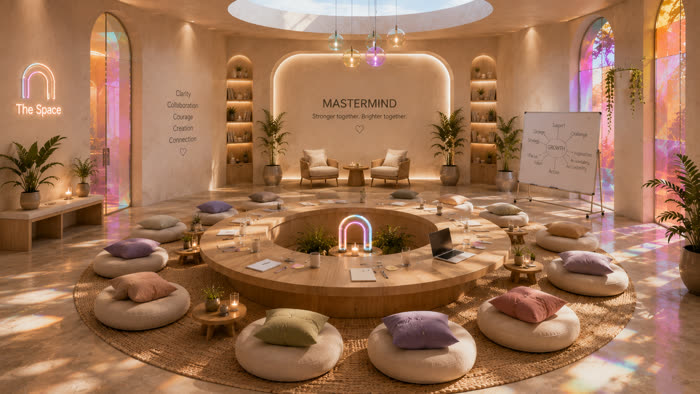
סדנאות מעשיות במיתוג, שיווק ומכירות.
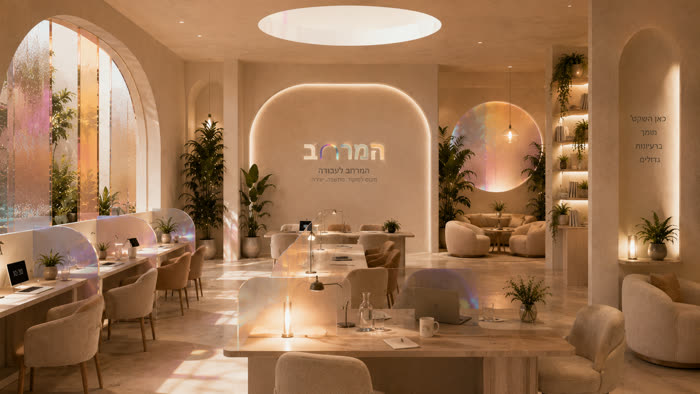
מפגשים ששומרים אותך בעשייה מתמדת
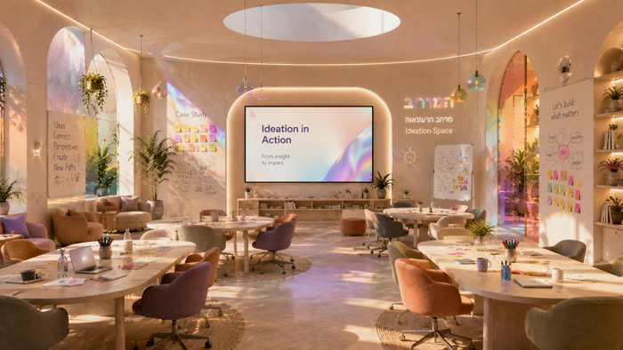
רעיונאות, יצירת טסטים ובדיקה
שיתוף, משובים, שאלות ותשובות
עצמי עיניים לרגע
זו לא עוד שיחת זום אפורה, וזה לא דומה לשום דבר שהכרת. הכפר שלנו הוא סביבה וירטואלית חיה ונושמת שמייצרת אינטימיות וחוויה אמיתית של שותפות. מקום שבו את יכולה להסתובב, לפגוש נשים כמוך, לעבוד בשקט או להתייעץ, ולהרגיש שאת כבר לא פועלת לבד.
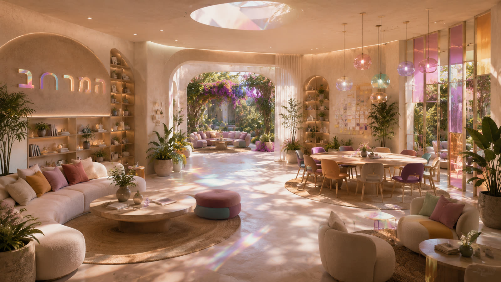
המרחב הוא מקום חדש שאנחנו בוראות יחד, ולכן זו הזדמנות נדירה להיכנס ראשונה, ולעצב יחד מה המרחב יהיה.
המייסדות הן לא רק חברות, הן השותפות שיגדירו את הנורמות והרוח של המרחב מהיום הראשון.
תנאי ההצטרפות למייסדות לא יחזרו. את נכנסת ראשונה, בתנאים שתוכלי לספר עליהם בגאווה.
את לא מצטרפת לקהילה מוכנה, את עוזרת לבנות אחת שתהיה בדיוק מה שתמיד רצית.
מספר מקומות המייסדות מוגבל במכוון, כדי שנוכל לתת תשומת לב אמיתית לכל אחת.
שיחה אישית איתנו, לוודא שהמרחב הוא המקום הנכון, משני הצדדים.
מבינים איפה צוואר הבקבוק בעסק שלך, ובונים תוכנית עבודה לרבעון הראשון.
מצטרפת למאסטרמיינד, לסביבת ה-Coworking ולמעבדת הניסויים.
פוסט שפחדת להעלות, עולה. שיחת מכירה שהפחידה אותך, הופכת ללקוח משלם.
אחרי שהיסודות חזקים, מסתכלות קדימה. המרחב צומח יחד איתך.
למה הקמנו את "המרחב"?
נעים להכיר, אנחנו גליה ומרב.
כל אחת מאיתנו הגיעה לנקודה בעסק שבה היא הרגישה בודדה ומוצפת מול ים של כלים, אפשרויות והבטחות, ועמדה בצומת דרכים.
הבנו שהבעיה שלנו, כמו של עוד המון בעלות עסקים, היא לא חוסר בידע, אלא השיתוק שמגיע מעודף ידע, והבדידות התהומית כשמקימים ומנהלים עסק לבד.
במקום לעצור או להמשיך להיאבק ולהישאר במקום, החלטנו לחבור יחד ולמצוא כלים ודרכים כדי לאפשר לבעלות עסקים כמונו - להתקדם ולהגיע לעסק משגשג. יצאנו לשטח, קיימנו ראיונות, הרצנו סדנאות פיילוט, ופשוט ישבנו להקשיב.
שם נפל לנו האסימון. שמענו מנשים עצמאיות מה בדיוק כואב להן, מה מטריד אותן, ומה לדעתן עוצר אותן מלהגיע לאן שהן רוצות:
האם משהו מזה נשמע לך מוכר?
מתוך הכאבים האלה, הבנו שיש צורך בוער בהכוונה מקצועית ואיכותית, אבל כזו שתהיה נגישה, בגובה העיניים, ותהיה איתך יד ביד בשלב העשייה ולאורך זמן. הבנו שדבר כזה לא יכול להיות "פתרון קסם".
"המרחב" צמח מתוך השטח כדי לעזור לנו ולך לעשות את הדרך מבלבול לבידול בצורה הכי מעשית, נגישה ונעימה שיש.
בנינו את הסביבה והשיטה הזו על בסיס מתודולוגיות מוכחות וניסיון שעזר לנו וללקוחות שלנו לאורך השנים, להגיע לתוצאות ממשיות.
אנחנו יודעות כמה זה שוחק לבנות עסק יציב לבד, ויודעות בדיוק איך אפשר אחרת.
אנחנו מחכות לפגוש אותך במרחב הווירטואלי שלנו, להכיר אותך באופן אישי, ולהתחיל לעצב יחד את הדרך שלך.
כל הרכיבים שבונים יחד את המרחב שלך.
מערכת הפעלה עסקית
תוכנית עבודה מובנית שמייצרת תוצאות עקביות
ריטואלים להתקדמות ושיפור מתמיד
מפגשי מאסטרמיינד עם פידבק מקצועי וסיעור מוחות
מרחב עבודה דיגיטלי
Silent Coworking שמחסל דחיינות
מעבדת ניסויים לאבות-טיפוס
מרחב בטוח לבחון רעיונות ולקבל משוב מהיר
הדרכת AI לבניית "מוח דיגיטלי"
ליווי אישי בבניית מערכת ניהול ידע
ליווי הוליסטי וצמוד (גליה ומרב)
חזון ובידול, לצד חוסן מנטלי ופרקטיקה
עלות חודשית נוחה
ללא התחייבות · ניתן לעזוב בכל חודש
אני רוצה שיחת היכרותהשיחות יתקיימו בכפר הווירטואלי - יחד נבדוק התאמה הדדית - כבר מהשיחה תצאי עם ערך אמיתי לך ולעסק שלך.
המרחב הוא בשבילך אם
המרחב הוא לא בשבילך אם
אמרו עלינו
צילומי מסך וציטוטים של משתתפות בסדנאות והרצאות שהעברנו
הודעות שקיבלנו
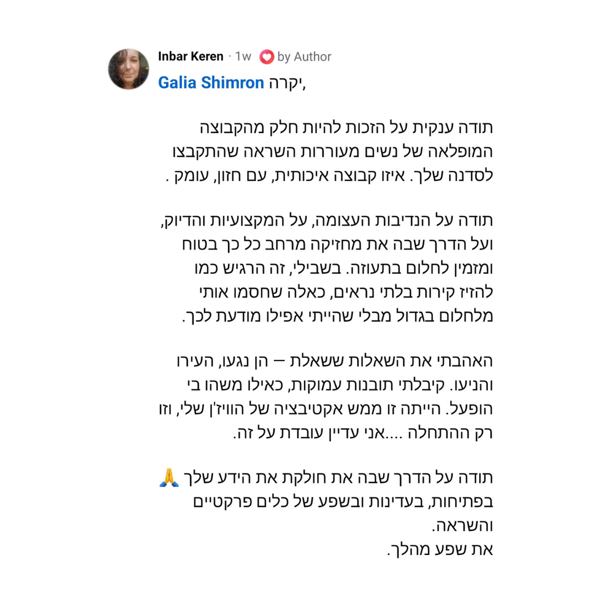
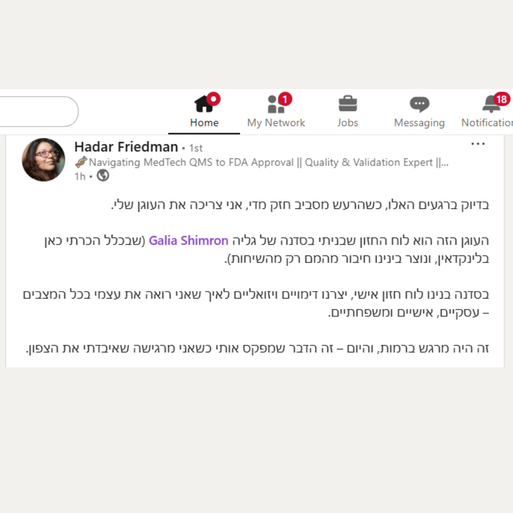
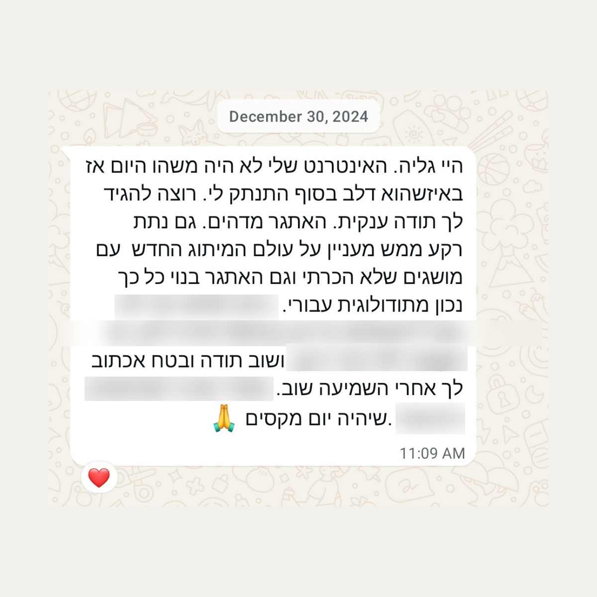
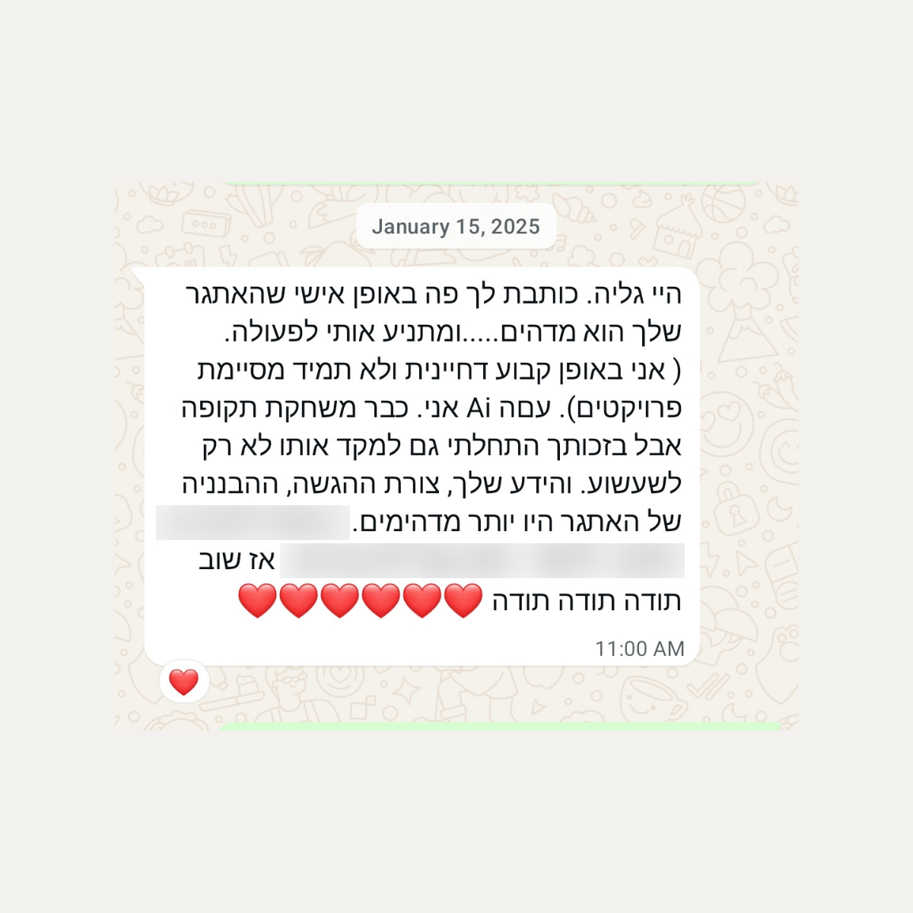
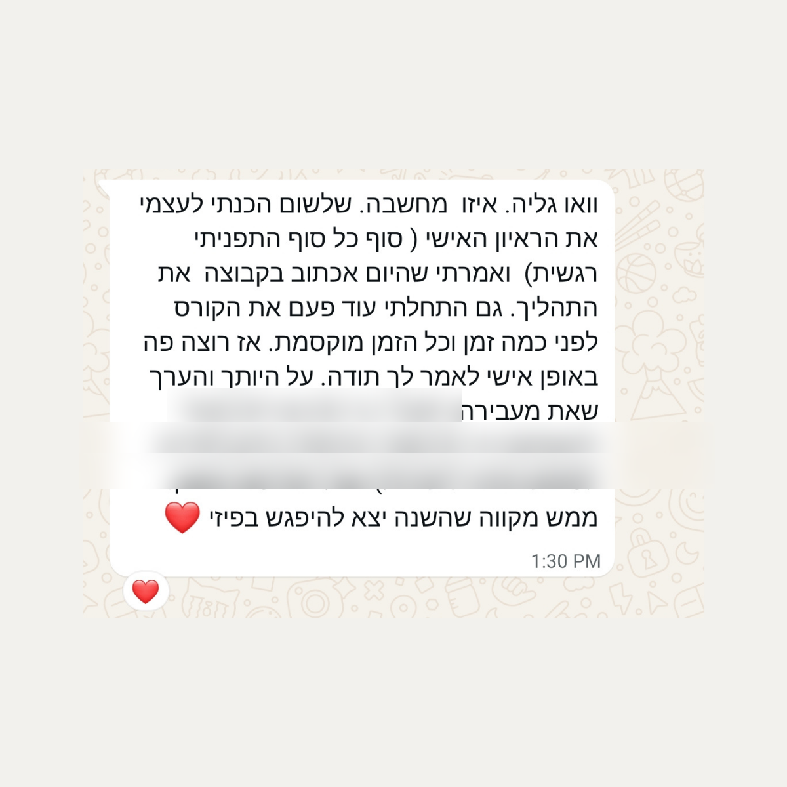
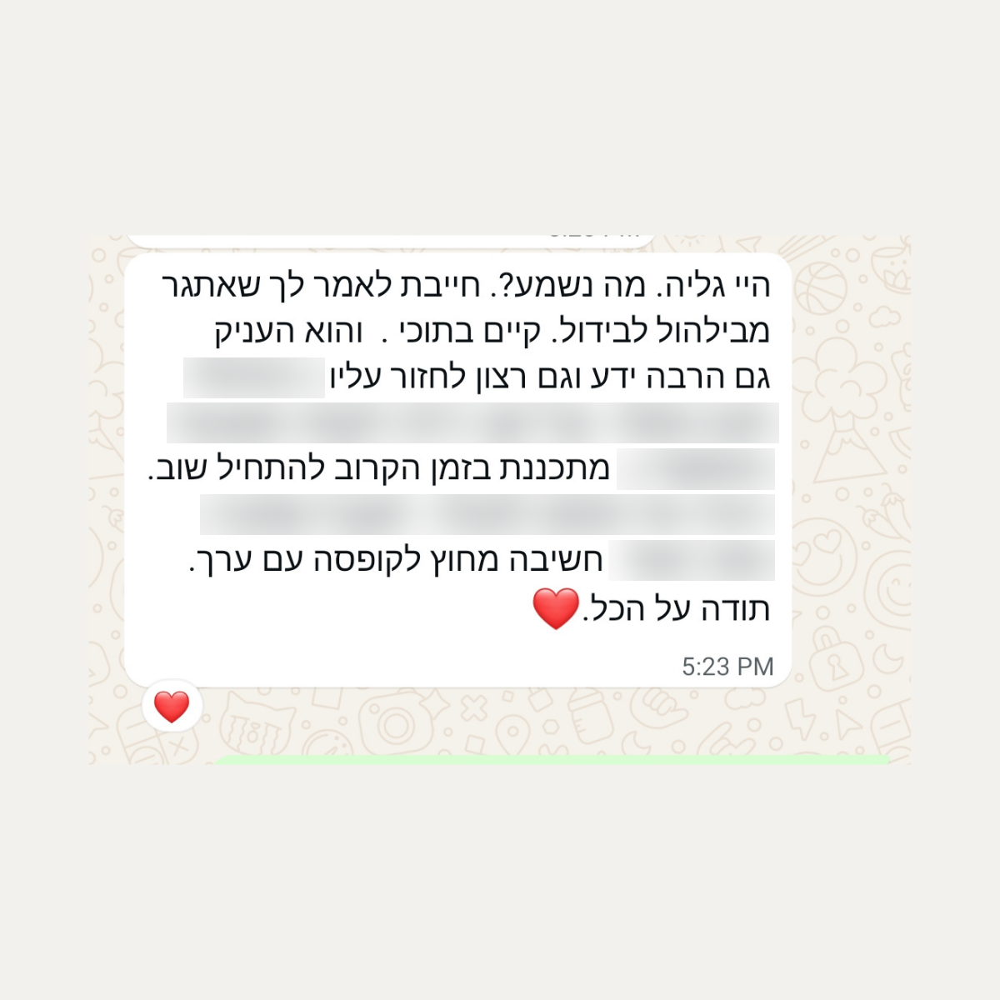
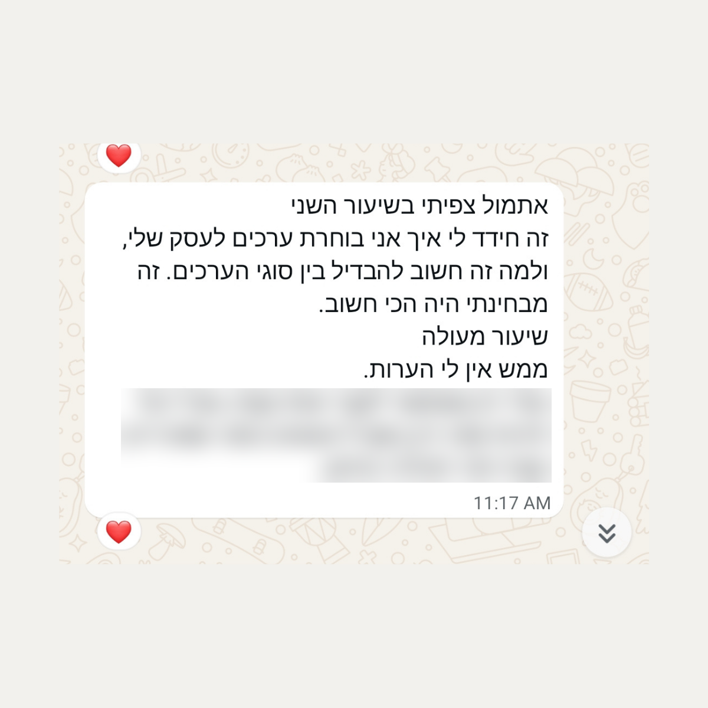
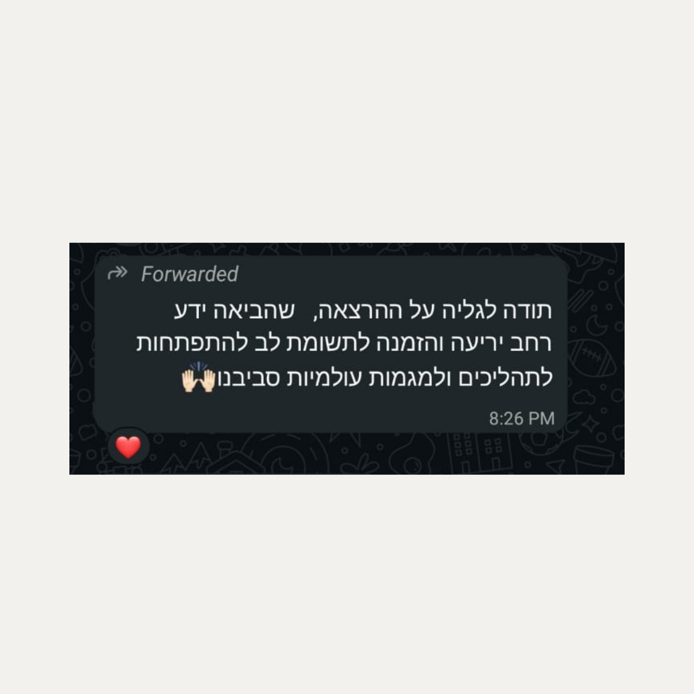
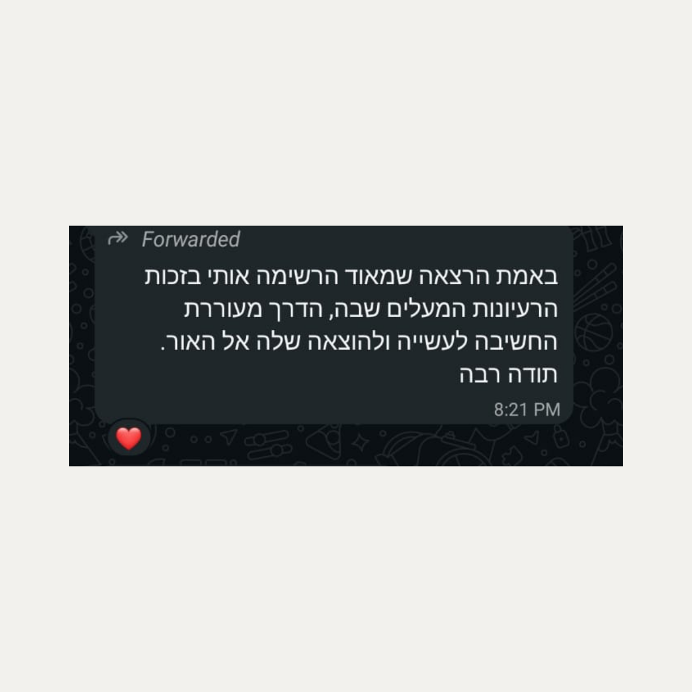
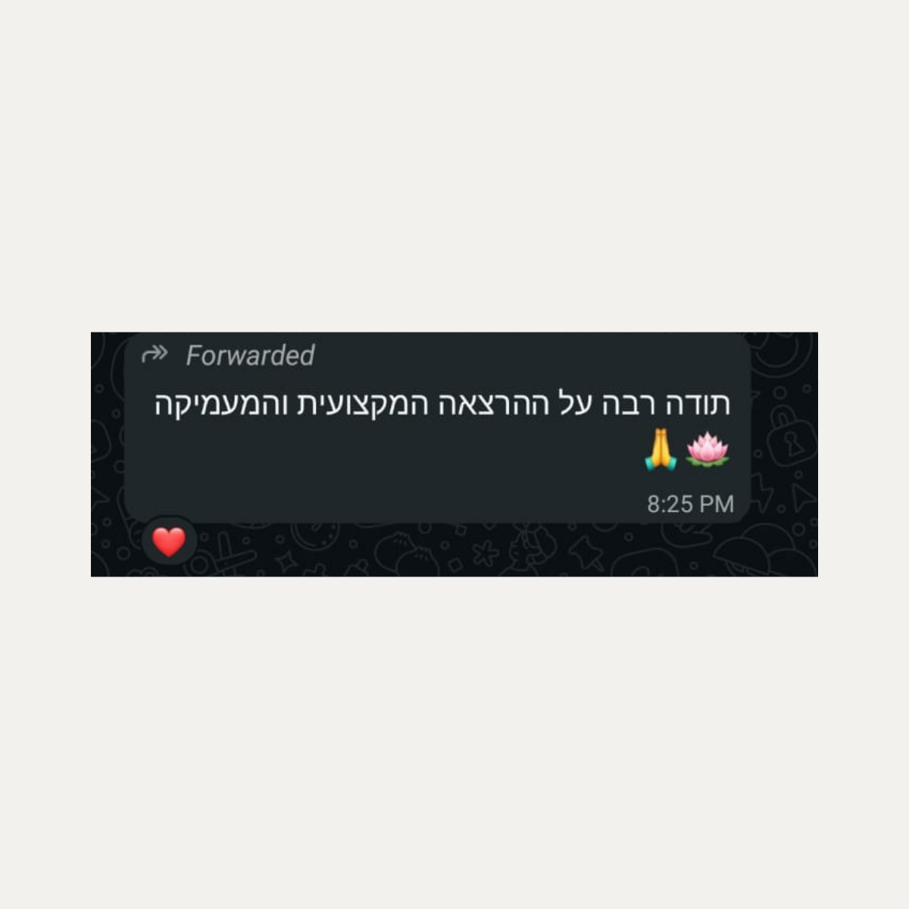
ציטוטים נבחרים מתוך משובי סדנאות
"ממליצה בחום על סדנת איקיגאי בהנחייתה של גליה: סדנה מעניינת, מעמיקה, יצירתית. השימוש בכלי הזה פשוט גאוני, וכל אחד יכול להפיק ממנו תועלת!"
רונית איטח
מורה ומטפלת
"גליה היא מנחה בחסד - נעימה, מסבירה ומכווינה. נהניתי מאוד מהסדנה ואני ממליצה עליה לכל מי שקצת עייף מהמירוץ ורוצה רגע להתבוננות עצמית."
אסנת לבנת
"גליה מביאה כלי פשוט שעוזר לדייק את כל הדברים החשובים לך בחיים ולהפיק מהם את המקסימום. ממליצה לכל אישה שרוצה באמת לגלות ולהביא את המתנות שלה לעולם."
אווה
"חובה לכל אחד ואחת שמרגישים תקועים בחיים ורוצים להגיע למקומות חדשים ומיטיבים יותר. סדנה פרקטית ומעשית שיוצאים ממנה עם תובנות שמשנות את החיים, ליטרלי."
אנונימית
"סדנה קצרה ומאירת עיניים, שעושה סדר ופותחת אפשרויות שאולי לא ראינו קודם."
ברי
"זה שוס בעיני. מכל מפגש ניתן ללמוד משהו - כולנו מורים ותלמידים."
אנונימית
"גליה נמצאת באזור הגאונות שלה ומובילה את התהליך באופן נעים, מכבד ומאיר עיניים. ממליצה מאוד על הסדנה."
אלמה
"הסדנה הזו באמת פותחת את הראש. הגעתי במחשבה שדי ברור לי מה אני רוצה, ותוך כדי ראיתי איך החזון יכול לגדול, להתפתח ולהפוך למדויק יותר - ואפילו להעלות חיוך גדול על הפנים."
אורי שביט
"זו חוויה שיש בה גם הנאה, גם חקירה וגם דיוק החזון. פעם בתקופה חשוב לעשות סדנה כזו, כדי שהמשאבים הפיזיים והרוחניים ינותבו למקום הנכון."
ורד ג'ויה-שדה
"ממליצה בחום לעשות את הסדנה. כל הפחדים הטכניים יתפוגגו, ועוד יותר מזה - הפחד לחלום רחוק וגדול יקטן משמעותית."
מזל חסון
"הסדנה אפשרה לי לפתוח את הראש ולחשוב מעבר לגבולות המוכרים, להעז לשאול שאלות ולדמיין אפשרויות שלא חשבתי עליהן קודם - ולהתחבר מחדש לסקרנות וליצירתיות."
ליז צור
"אם אתם מדשדשים או רוצים לעלות רמה בעסק ובהכנסה - זה המקום לקבל את הכלים והמידע."
אלי תלמי-העוז
"ממליצה מאוד, מתוך הניסיון שלי: אכן אפשר להכין תמונת חזון ולממש אותה."
אתי ווקנין
"סדנה מעולה כדי להבין את המטרות של העסק שלך, לטייב אותן וליצור תמונת חזון לעתיד."
רביב בראל
"זו סדנת לוח החזון הכי מעמיקה שעשיתי, כולל ההקדמה שהסבירה את הקונספט וגם הפירוט של השאלות. סיימתי אותה מלאת התלהבות ומוטיבציה להמשיך בעסק."
מיה מלמד
"הזדמנות להסתכל על החלום מזווית חדשה וממשית."
ענת
"האתגר של גליה היה מעניין ומעורר השראה באמת. הוא החזיר לי תחושת התרגשות ועניין אמיתיים, נתן לי תהליכים מפתחים לעסק, ופתח לי אופקים ואפשרויות חדשות למחשבה ולפיתוח מוצרים. תודה לגליה על המתנה היחודית הזו."
בלה
עיצוב ואמנות
"האתגר נתן לי הרבה ידע, פתח לי את הראש והעניק השראה - התחלתי לחשוב בצורה יצירתית וממוקדת יותר, עם זוויות חדשות על העסק ועל הערך שאני מביאה. ממליצה בחום לכל מי שמתכנן או מנהל עסק להשתתף - הוא מבדל, מעשיר ומפתח חשיבה אחרת."
נטליה קוזיוכוב
קלינאית תקשורת התפתחותית
"ממליצה בחום על האתגר 'מבלבול לבידול' - התרגילים השונים לוקחים אותך למקום חדש של הסתכלות וחשיבה, ופתאום משהו אחר נראה אפשרי. גליה, בעדינות וברכות, מובילה לגילוי של מקומות חדשים."
אווה סלוצקי
"התהליך עם גליה היה משמעותי ומקדם עבורי מאוד. הוא עזר לי לצאת משגרת היום-יום ולבחון את הדברים מחדש - בדיוק מה שאני והעסק שלי היינו צריכות, כדי לנווט ממקום שלם, מודע ומחובר ללב."
בעלת עסק לעיצוב מוצר והדרכת AI
משתתפת אנונימית
"האתגר שגליה העבירה היה מפתיע ומעשיר. הוא פתח לי את הראש והעמיק את המחשבה על תהליכי המיתוג האישיים והעסקיים שלי, ותרם לי לא רק בהיבט העסקי אלא גם ברמה האישית. יצאתי עם ביטחון והבנה רחבה יותר של מה שמייחד אותי בשוק תחרותי."
בעלת עסק לטיפול והעברת סדנאות בתחום הרוחני
משתתפת אנונימית
"גליה נתנה מהלב והנשמה, וזה מורגש בכל שלב. האתגר בנוי בצורה מסודרת, נדבך על נדבך - מעניין, מעורר השראה ונותן דרייב. התרגילים שמשולבים תוך כדי גורמים לך באמת לעשות, ולא לתת לידע ללכת לאיבוד. יצירתי, בקצב נכון, ופתח לי הרבה לקראת הבאות."
בעלת עסק בתחום היוגה
משתתפת אנונימית
"עוד לפני שסיימתי את כל החומר, האתגר כבר פתח לי את הראש לרעיונות וכיוונים חדשים שלא חשבתי עליהם קודם. הבנתי שזה לא רק מידע, אלא תהליך שדורש זמן ומחשבה - ואני כבר מרגישה את הפוטנציאל הגדול שבו. ממליצה בחום לכל מי שרוצה לחשוב מחוץ לקופסה ולהתפתח בכיוונים חדשים!"
קלינאית תקשורת
משתתפת אנונימית
רוב הקהילות פסיביות: הרצאות, נטוורקינג, השראה. המרחב הוא סביבת עבודה אקטיבית. לא נפגשות כדי לדבר, נפגשות כדי לעבוד. המוצר שלנו הוא הסביבה והשיטה, לא הקהילה.
זו בדיוק הסיבה שבגללה את צריכה את המרחב. המטרה היא לא להוסיף משימות, אלא לפנות זמן, על ידי חיסול הזמן שהולך על דחיינות והתלבטויות שלא ממוקדות.
בדיוק בגלל זה בנינו את המודל סביב שיחת התאמה. אין חוזים, אין התחייבות ארוכת טווח. אם זה לא מדבר אלייך, את עוזבת בכל עת.
הופכות חזון לעסק יציב בעולם משתנה
שיחת ההיכרות היא הזדמנות לבדוק, משני הצדדים, אם המרחב הוא באמת המקום שלך. מספר מקומות המייסדות מוגבל.